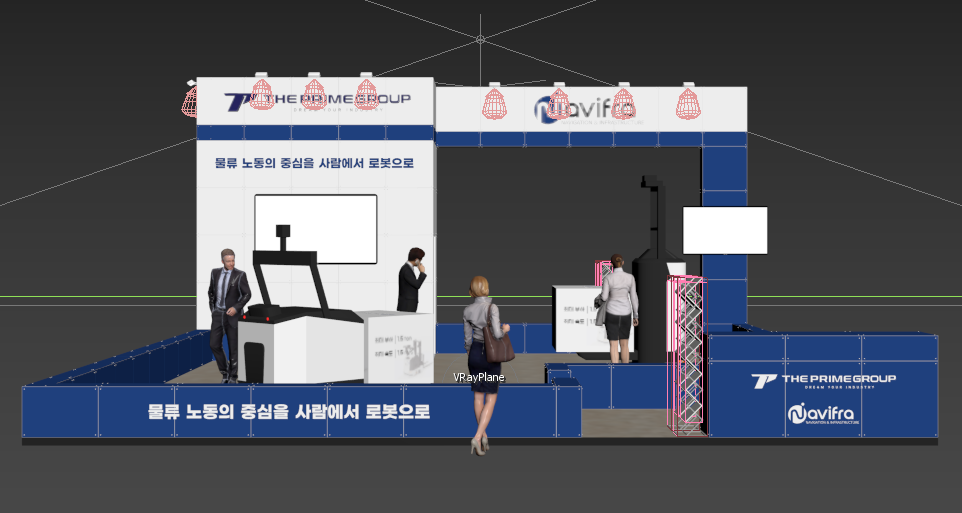
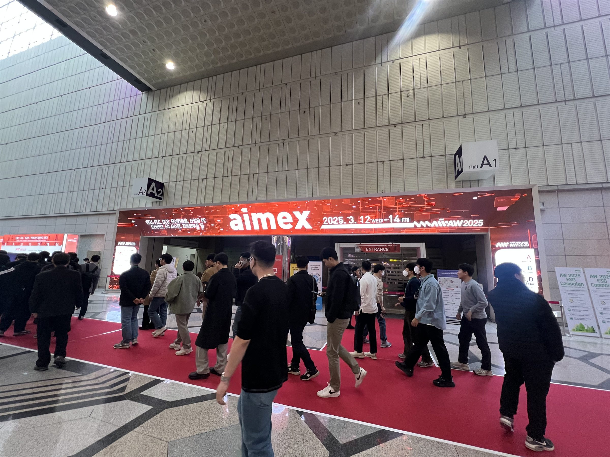
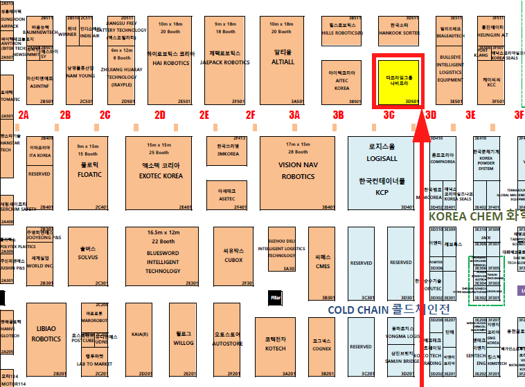
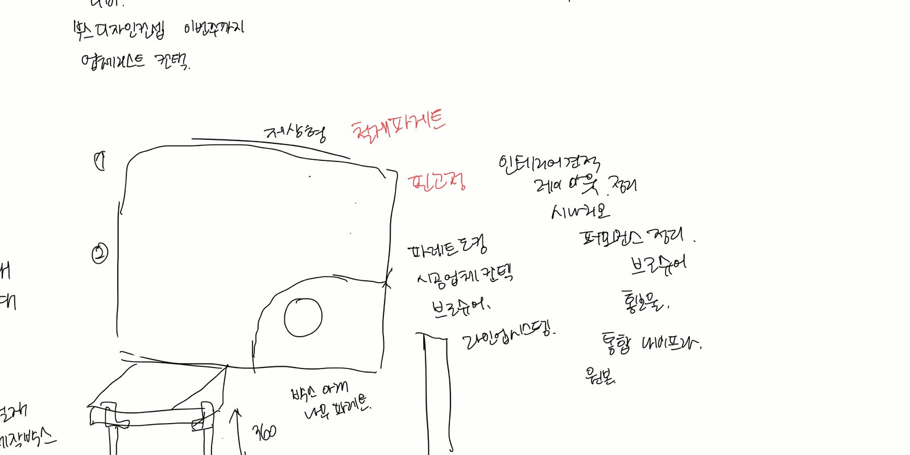
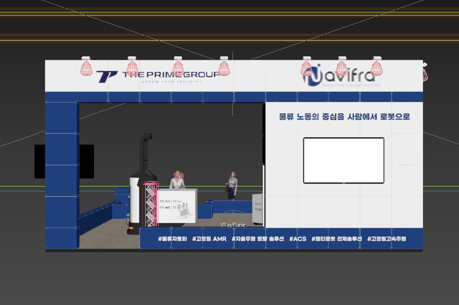
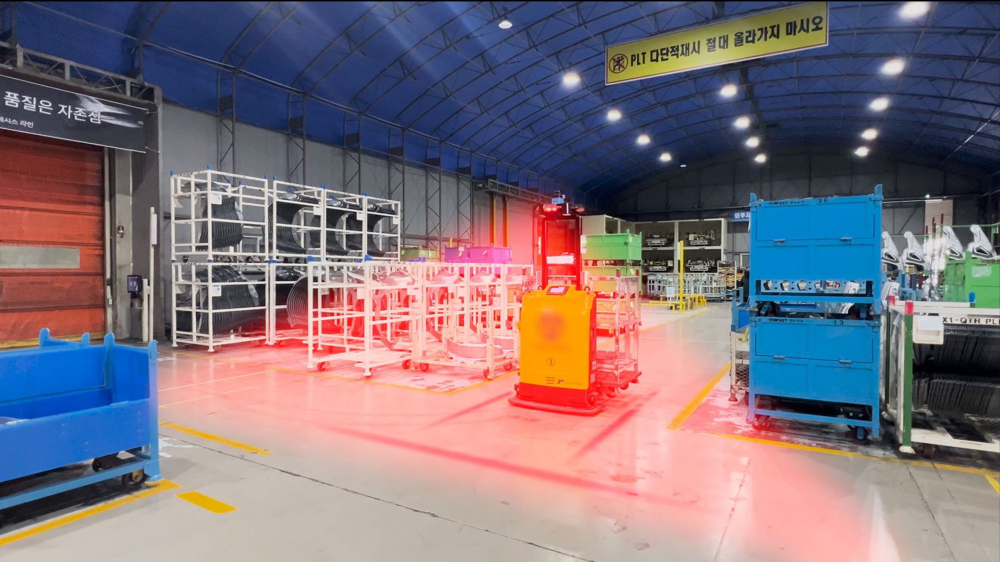
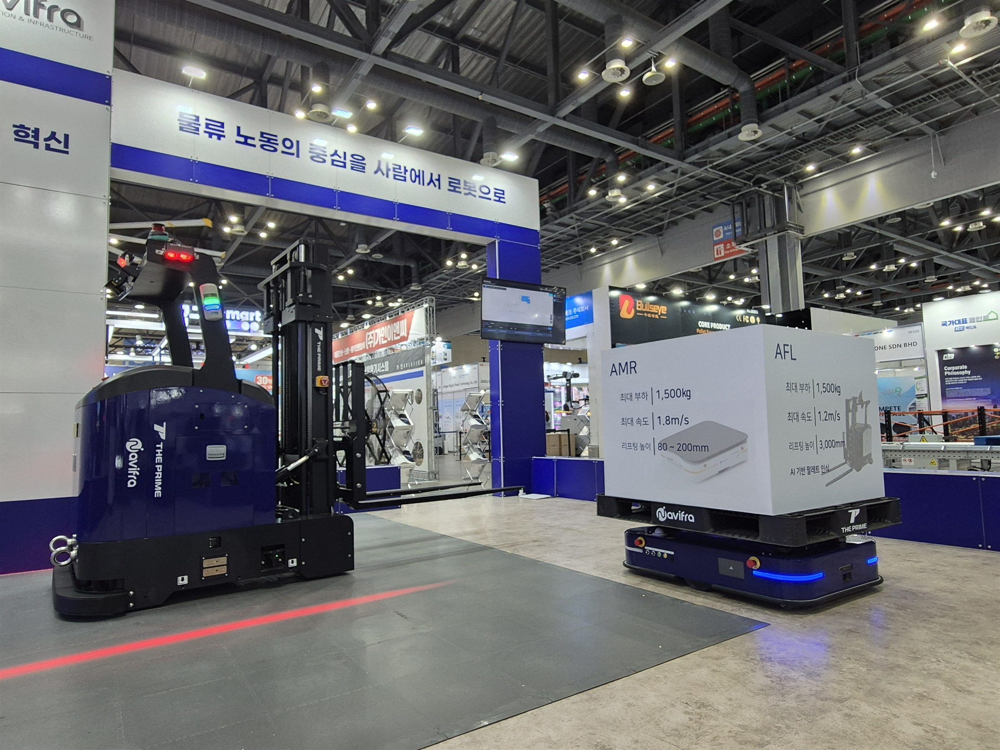
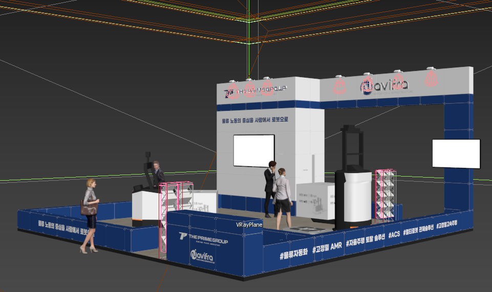
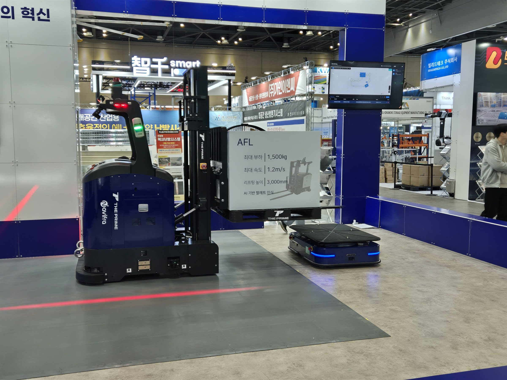

KOREA MAT 2025
AMR을 보고 이해하는 전시 경험을 기획했습니다.
AMR 시연과 제품 상담이 한 부스 안에서 자연스럽게 이어지도록 공간을 나눠 제안했습니다. 승인된 기획은 KOREA MAT 현장에 구현됐습니다.
Case Summary
- 기간
- 2025 · KOREA MAT
- 직접 수행
- 현장 조사, 부스 기획안 작성·발표, 상영 영상 촬영·편집, 현장 구현 확인
- 협업 범위
- 증정품 제작 업체 소통과 납품 일정 확인
- 현장 적용
- 공간 구성안 승인·구현, 직접 제작한 영상 반복 상영
Challenge & Planning
시연과 상담이 함께 가능한 부스 구조를 제안했습니다.
AW 2025를 참관한 뒤, AMR의 움직임을 보여줄 시연 구역과
제품 도입을 설명할 상담 구역을 나누는 방향으로 기획했습니다.
- Observation
- 움직이는 제품은 설명만으로 전달하기 어려워 작동을 볼 시연 공간이 필요했습니다.
- Decision
- 이동과 작동을 보는 시연 구역과 도입 조건 상담 구역을 나눠 기획안에 반영했습니다.

Execution
기획과 영상 제작은 직접 진행하고, 증정품 제작은 외부 업체와 조율했습니다.
- Direct
- AW 2025 현장 조사, KOREA MAT 부스 기획안 작성과 발표, AMR 시연·상담 공간 제안, 상영 영상 촬영·편집, 현장 구현 확인
- Coordination
- 증정품 제작 업체와 소통하고 납품 일정을 확인했습니다.
- Outsourced
- AMR 로고 스티커, 브로슈어, 제품 사양 패널, 안내 보드와 증정품 제작
-

01 AW 현장 레퍼런스 조사 시연 장비와 관람 동선, 정보 노출 방식 확인 -

02 조건과 요구사항 정리 전시장 내 부스 위치와 크기 확인 -

03 부스 기획안 작성·발표 AMR 시연과 상담 구역을 나눈 공간 구성 제안 -

04 시안 검토와 공간안 확정 업체 시안에 수정 의견을 전달하고 구성안 확인 -

05 상영 영상 제작·편집 반복 재생에 맞춘 정보와 장면 구성 -

06 현장 구현 확인 승인된 공간 구성과 설치 결과 대조
Implementation & Evidence
제안한 공간 구성이 실제 현장에 구현됐습니다.
사내 발표를 거쳐 시연·상담 공간 구성이 승인됐고, KOREA MAT 현장 부스에 적용됐습니다. 기획안에 나눠 표시한 역할이 설치 결과에 반영됐는지 현장에서 확인했습니다.


Video
반복 재생 환경에 맞춘 상영 영상을 직접 제작했습니다.
제품과 사업 내용이 순서대로 이어지도록 정보 구조와 장면을 정리했습니다. 부스 상영 영상은 직접 촬영하고 편집했으며, 완성한 영상은 KOREA MAT 현장에서 반복 상영됐습니다.
Exhibition Screening Video

직접 촬영하고 편집해 KOREA MAT 부스에서 반복 상영한 영상입니다.
Official On-site Record

부스와 AMR의 현장 운영 모습을 확인할 수 있는 더프라임그룹 공식 기록 영상입니다.